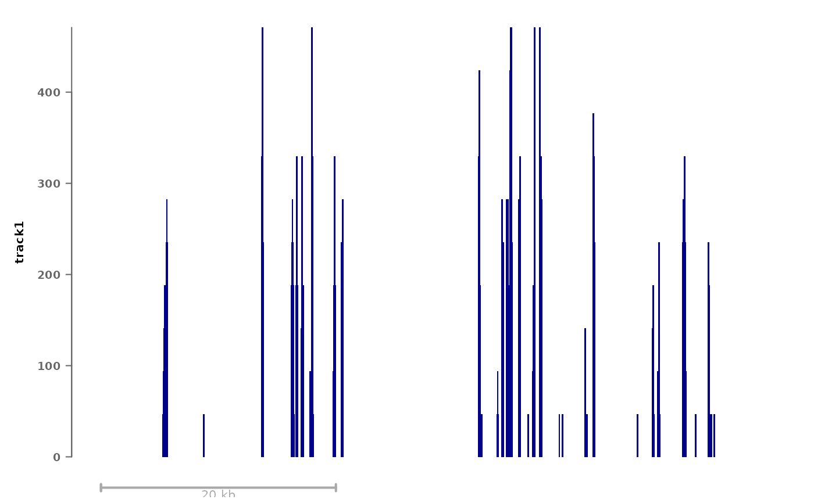

plotSignalTracks
plotSignalTracks.RdA wrapper around `Gviz` for quick plotting of genomic signals in a single region.
Usage
plotSignalTracks(
files = list(),
region,
ensdb = NULL,
colors = "darkblue",
type = "histogram",
genomeAxis = 0.3,
extend = 0.15,
aggregation = c("mean", "median", "sum", "max", "min", "heatmap", "overlay",
"heatmap+mean"),
transcripts = c("collapsed", "full", "coding", "none"),
genes.params = list(col.line = "grey40", col = NULL, fill = "#000000", rotation.title =
0),
align.params = list(color = NULL),
tracks.params = list(),
extraTracks = list(),
background.title = "white",
col.axis = "grey40",
bed.rotation.title = 0,
col.title = "black",
cex.title = 0.65,
overlay.alpha = 100,
normFactors = NULL,
...
)Arguments
- files
A named list or vector of paths to signal files (e.g. bigwig/bam, but also bed files). If a list, list elements will be overlaid or aggregated (depending on the `aggregation` argument). Formats accepted by
DataTrack's `range` argument are also accepted. Can also include `GRanges ` objects (which will be plotted asAnnotationTrack) or objects inheriting theGdObjectclass (i.e. any `Gviz` track object).- region
A genomic region, either as a `GRanges` object or as a string (i.e. `region="chr5:10000-12000`). Alternatively, if `ensdb` is provided, a gene name can be given, and the gene's coordinates will be used as region.
- ensdb
An optional
EnsDbobject form which to grab transcripts.- colors
Signal color(s); will be recycled for elements of `files`
- type
Signal plot type(s); will be recycled for elements of `files`. This is ignored for bed-like files, which are shown as
AnnotationTrack. See the `type` options ofDataTrack. In addition to these options, the type 'alignments' can be given for bam files, which will display them asAlignmentsTrack.- genomeAxis
Whether to plot a genome axis. Alternatively, a numeric scalar between 0 and 1 can be given, in which case a scale will be plotted of this relative size.
- extend
Either an integer or vector of two integers indicating the number of base pairs by which to extent on either side. If `extend`<=1, this will be interpreted as a fraction of the plotted region.
- aggregation
Method for aggregation data tracks, one of: 'mean' (default), 'median', 'max', 'overlay', 'heatmap', or 'heatmap+mean'. The latter will create a mean plot of type `type` followed by a heatmap.
- transcripts
Whether to show transcripts (reguires `ensdb`) as "full", "collapsed" (default), "coding" (only coding transcripts) or "none". Alternatively, can be a custom
GeneRegionTrackobject.- genes.params
Named list of parameters passed to
GeneRegionTrack.- align.params
Named list of parameters passed to
AlignmentsTrack. Only used for plotting bam files with `type="alignments"`.- tracks.params
Named list of parameters passed to
DataTrack.- extraTracks
List of extra custom tracks to be plotted.
- background.title
The background color of the track titles.
- col.axis
The color of the axes.
- bed.rotation.title
Rotation for track titles of bed files.
- col.title
The color of the track titles.
- cex.title
Expension factor for the font size of the track titles.
- overlay.alpha
Transparency (0 to 250) when overlaying tracks.
- ...
Passed to
plotTracks.
Examples
# fetch path to example bigwig file:
(bw <- system.file("extdata/example_rna.bw", package="epiwraps"))
#> [1] "/home/runner/work/_temp/Library/epiwraps/extdata/example_rna.bw"
plotSignalTracks(list(track1=bw), region="8:22165140-22212326")

# if we had an EnsDb object loaded, we could just input a gene instead of
# coordinates, and the transcript models would automatically show (not run):
# plotSignalTracks(list(track1=bw), region="BMP1", ensdb=ensdb)
# show all transcript variants:
# plotSignalTracks(list(tracks=bw), region="BMP1", ensdb=ensdb,
# transcripts="full")